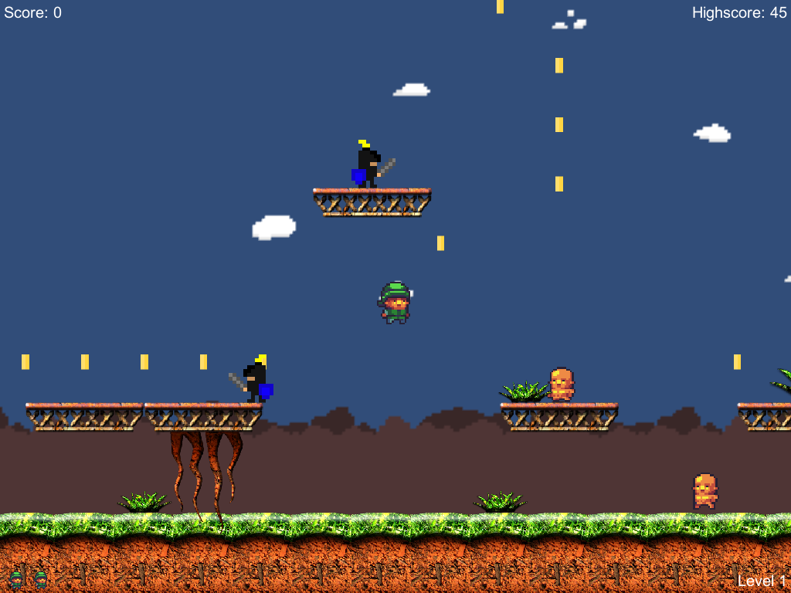

Created by Brock Moeller, Brian Winn, and Greg Kozma
Collect coins, avoid enemies, and go for the rose!
The Complex Kevin MacLeod (incompetech.com)
Licensed under Creative Commons: By Attribution 3.0 License
http://creativecommons.org/licenses/by/3.0/
© 0xbrock. All Rights Reserved. Assets belonging to Michigan State University copyrighted by Michigan State University.